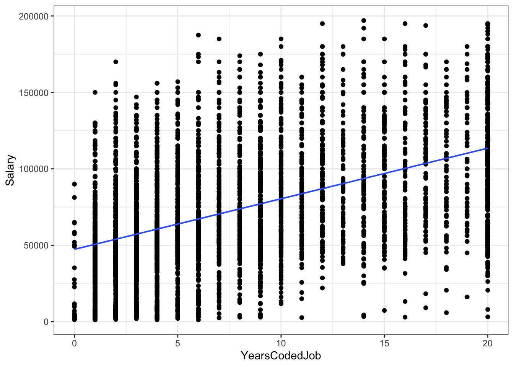
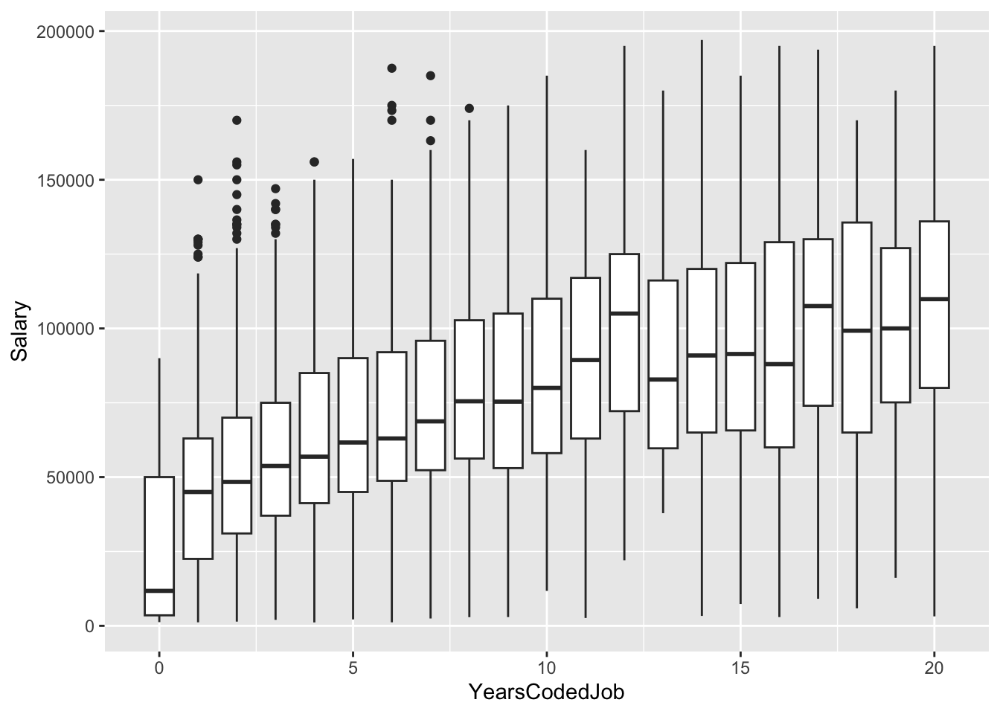

library(tidyverse)
library(ggformula)
library(gander)
library(ellmer)Introduction
I am going to use gander to create a simple example of how to use it. It seems gander can allow the user to see the data they are working with and is able to generate accurate R code for graphs.
Setting Up R Packages
Setting up gander and ellmer
There are a few steps involved in setting up gander and ellmer to work with your preferred LLM (Large Language Model) service. The steps are as follows:
- Install the
ganderandellmerpackages. - Get your API Key, from say Anthropic, ChatGPT, or Ollama.
- Anthropic: visit https://console.anthropic.com/settings/keys
- ChatGPT: visit https://platform.openai.com/api-keys
- Ollama: visit https://ollama.com/ # runs LLMs LOCALLY! NO API Key needed.
See “Choosing a model” in vignette(“gander”, package = “gander”) to learn more.
- Save the
API_KEYof you preferred LLM service in your.Rprofilefile. For example, if you are using Ollama, you would add the following line to your.Rprofile, as follows:
## RUN THESE IN YOUR CONSOLE
install.packages("usethis")
library(usethis)
usethis::edit_r_profile()This will open the .Rprofile file in your RStudio editor. You will need to add (one of ) the following lines to the file:
OPENAI_API_KEY = “YOUR_API_KEY_HERE”
ANTHROPIC_API_KEY = “YOUR_API_KEY_HERE”
etc.
- Also add one of these line to the
.Rprofilefile:
options(.gander_chat = ellmer::chat_anthropic())
- If you wish to run models locally for free, you can use Ollama. In that case, you will need to:
- install the Ollama CLI https://ollama.com/download
- download a model from https://ollama.com/models, say “llama3.1”
- then add the following line to your
.Rprofilefile:options(.gander_chat = ellmer::chat_ollama(model = "llama3.1")) - MacOS: Ensure you start
ollamaserver by runningollama servein your terminal. - Windows: Add ollama.exe to your startup programs
- Setup the
ganderassistant: Theganderassistant is interfaced with the via thegander addin. For easiest access, we recommend registering thegander addinto a keyboard shortcut.
In RStudio, navigate to Tools > Modify Keyboard Shortcuts > Search "gander". The package author suggests Ctrl+Alt+G (or Ctrl+Cmd+G on macOS).
- Restart RStudio to ensure the changes take effect.
Using gander
The gander package speaks with ellmer to “speak with an LLM”. Hence there is a small amount of setup required for gander to deliver its goods.
As per @ref1, let us use the stackoverflow data from the modeldata package to create our graphs.
data("stackoverflow", package = "modeldata")
stackoverflow# A tibble: 5,594 × 21
Country Salary YearsCodedJob OpenSource Hobby CompanySizeNumber Remote
<fct> <dbl> <int> <dbl> <dbl> <dbl> <fct>
1 United Kingdom 1 e5 20 0 1 5000 Remote
2 United States 1.3 e5 20 1 1 1000 Remote
3 United States 1.75e5 16 0 1 10000 Not r…
4 Germany 6.45e4 4 0 0 1000 Not r…
5 India 6.64e3 1 0 1 5000 Not r…
6 United States 6.5 e4 1 0 1 20 Not r…
7 United States 1.10e5 13 0 1 20 Not r…
8 Germany 5.38e4 4 1 0 5000 Not r…
9 United States 1.09e5 7 1 1 20 Not r…
10 Germany 8.39e4 17 1 1 20 Not r…
# ℹ 5,584 more rows
# ℹ 14 more variables: CareerSatisfaction <int>, Data_scientist <dbl>,
# Database_administrator <dbl>, Desktop_applications_developer <dbl>,
# Developer_with_stats_math_background <dbl>, DevOps <dbl>,
# Embedded_developer <dbl>, Graphic_designer <dbl>,
# Graphics_programming <dbl>, Machine_learning_specialist <dbl>,
# Mobile_developer <dbl>, Quality_assurance_engineer <dbl>, …names(stackoverflow) [1] "Country"
[2] "Salary"
[3] "YearsCodedJob"
[4] "OpenSource"
[5] "Hobby"
[6] "CompanySizeNumber"
[7] "Remote"
[8] "CareerSatisfaction"
[9] "Data_scientist"
[10] "Database_administrator"
[11] "Desktop_applications_developer"
[12] "Developer_with_stats_math_background"
[13] "DevOps"
[14] "Embedded_developer"
[15] "Graphic_designer"
[16] "Graphics_programming"
[17] "Machine_learning_specialist"
[18] "Mobile_developer"
[19] "Quality_assurance_engineer"
[20] "Systems_administrator"
[21] "Web_developer" Let us now create a simple bar plot based on the variable “Country”.
Scatter plot for Salary vs Years coded
gf_point(data = stackoverflow, Salary ~ YearsCodedJob) %>%
gf_lm() %>%
gf_theme(theme_bw()) Warning: Using the `size` aesthetic with geom_line was deprecated in ggplot2 3.4.0.
ℹ Please use the `linewidth` aesthetic instead.
gf_boxplot(Salary ~ YearsCodedJob, group = ~ YearsCodedJob,data = stackoverflow)